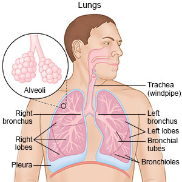
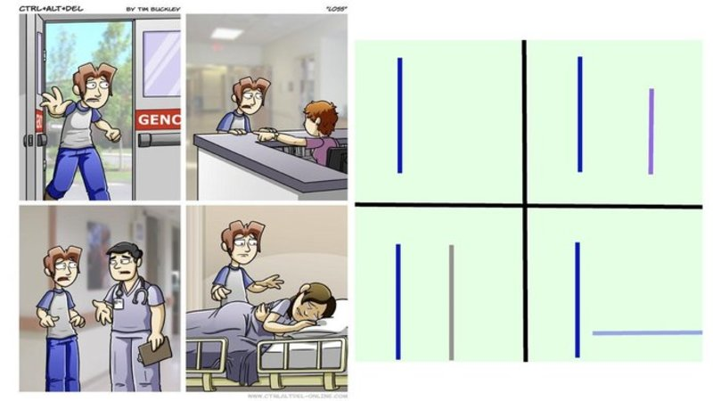
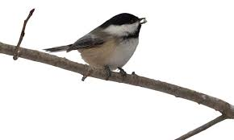

Welcome
Home
About Me
Where Is My Mind
Professional
Google Search Compilations
Current Vibes
Questions That Can Only Be Answered After Midnight
Food in my LUNGS
Hydrated but Sweaty
What does rabies look like?
Sneezing in the Sun
Monsanto...
Is This Loss?
Are Chickadees Real?
Dairy-Free Yogurt?
What is the point of powdered wigs?

 What does rabies look like?
What does rabies look like? Dairy-Free Yogurt?
Dairy-Free Yogurt? What is the point of powdered wigs?
What is the point of powdered wigs?